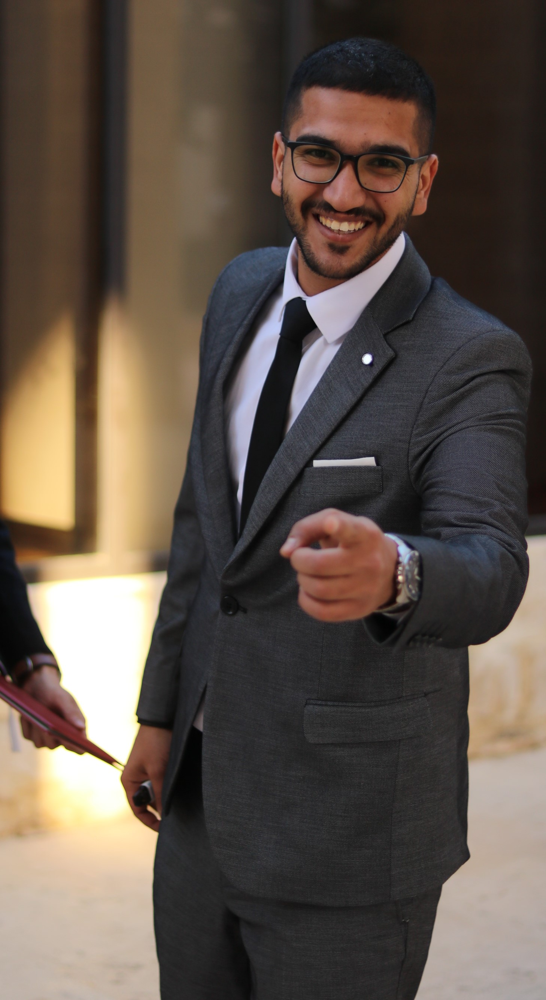

Mohammed Alnawaiseh

- Amman,Jordan /
-
00962796096824 /
-
Mohammednedal6@gmail.com
|
About Me
I am a dedicated and enthusiastic student that finished a computer science
degree at Mutah university. While I am in the process of acquiring a
strong foundation in my chosen field, I am eager to gain practical
experience and apply my academic knowledge to real-world challenges.
I am highly adaptable, quick to grasp new concepts, and adept at managing
multiple tasks efficiently. I am eager to bring my fresh perspectives and
enthusiasm to you while simultaneously expanding my skill set through
hands-on experience. I am excited about the opportunity to learn from
experienced professionals and contribute to the success of your company.
I am confident that my blend of academic knowledge, determination, and
eagerness to learn makes me a promising candidate who can bring a unique
perspective to the team.
Professional Experience
- Fullstack Web Development at Webtoon - Amman, Jordan
- Front end Web Development: July 2023
-
Graduation project: A web application for pharmacy management system
Technical Proficiencies and Knowledge Areas
- Agile
- QA
- C++
- HTML
- CSS
- PHP
- Problem Solving
- Microsoft Office
- Strategic Management
- Communication Skills
ducation and Credentials
- Graduated from Mutah University in Computer science: 2020 - 2024
- Taking a python course: June 2024 - Present
-
A full stack web development course for university training: July 2023 -
October 2023
Personal Attribute
- Dedicated to maintaining high-quality standards.
-
Strong analytical skills, creative, self-oriented, and ready to learn
and achieve new knowledge.
- Works individually and as a team member.
- Willing to deliver under pressure.
- Possesses strong communication and interpersonal skills.
- Learn as necessary to meet job requirements.
- Self-aware - always seeking to learn and grow.
- Good starter-Enthusiastic in finding openings and opportunities.
- High integrity and honesty; ethical and socially aware.
- Energetic and positive outlook, which often inspires others.
Languages
Check out some of my hobbies
(HERE)